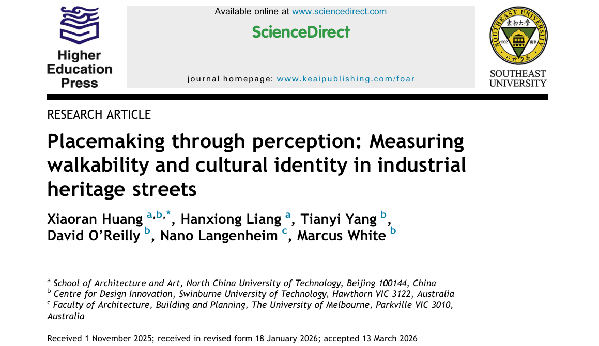
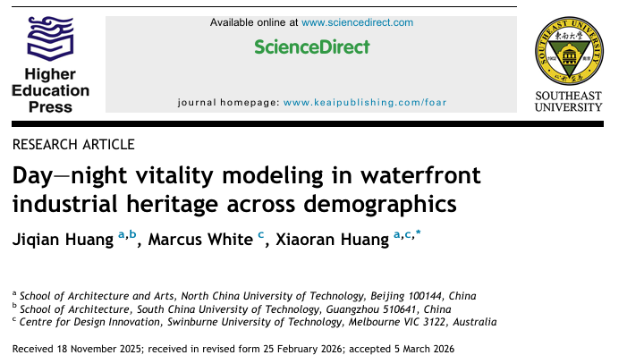
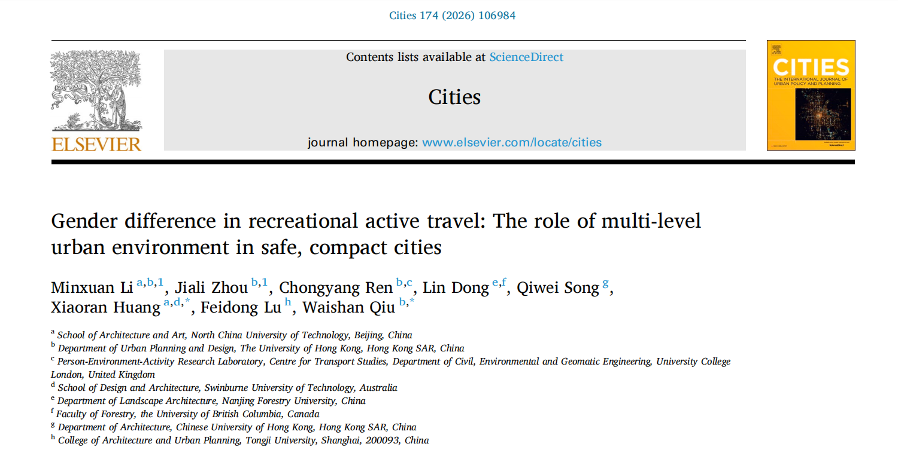
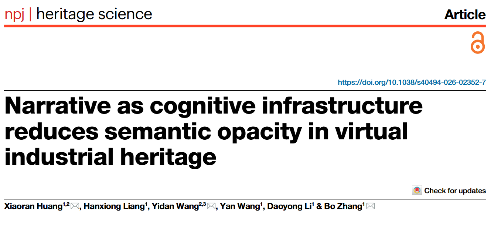

DADLab / Research Directions
研究方向

科研动态 Research Trends
更多动态 ↗
01 / DADLab↗科研动态 Research Trends
通过感知营造场所：衡量工业遗产街道中的步行便利性和文化认同
后工业遗产环境常常保留物质形态，却未能激发文化意义。本研究通过受控虚拟现实（VR）实验，探讨空间设计和诠释框架如何塑造对工业遗产的具身感知。80 名参与者在 18 个通过 L18 正交阵列生成的 VR 街景中，体验了五个空间变量的组合——绿色可见性、街道连接性、街道宽度、公共设施和遗产保护。一个 2......
查看详情 ➜
02 / DADLab↗科研动态 Research Trends
滨水工业遗产中跨人口群体的昼夜活力建模
活力是滨水工业遗产成功更新的核心指标，但现有研究常忽视夜间动态及不同人口群体的多样化需求。本研究提出了一种多源量化工作流程，结合街景影像（SVI）、在线感知调查、行为热图和可解释机器学习，以评估感知和行为活力。研究聚焦广州市中心再生的工业滨水区，识别出城市生活驱动因素的明显时间转变。结果显示，白天活......
查看详情 ➜
03 / DADLab↗科研动态 Research Trends
休闲主动旅行中的性别差异：多层次城市环境在安全、紧凑的城市中的作用
本文以香港为研究对象，聚焦高密度安全亚洲城市中休闲性主动出行（RAT）的性别差异，整合宏观建成环境与微观街道环境展开分析，采用 Strava 大数据、街景图像、计算机视觉与多源空间数据，经变量筛选后运用 OLS 回归与空间滞后模型（SLM）开展量化研究，结果发现男性 RAT 总量约为女性 5 倍，女......
查看详情 ➜
04 / DADLab↗科研动态 Research Trends
作为认知基础设施的叙事可降低虚拟工业遗产的语义模糊性
本研究针对数字工业遗产 “视觉保真度高但语义解读模糊” 的核心痛点，以北京首钢园高保真 VR 重建场景为载体，采用随机对照实验设计，将 30 名非专业被试分为 NPC 同步叙事引导组与无引导组，综合运用眼动追踪、生理信号监测、主观问卷及认知网络分析（ENA）、结构方程模型（SEM）等多模态方法开展对......
查看详情 ➜